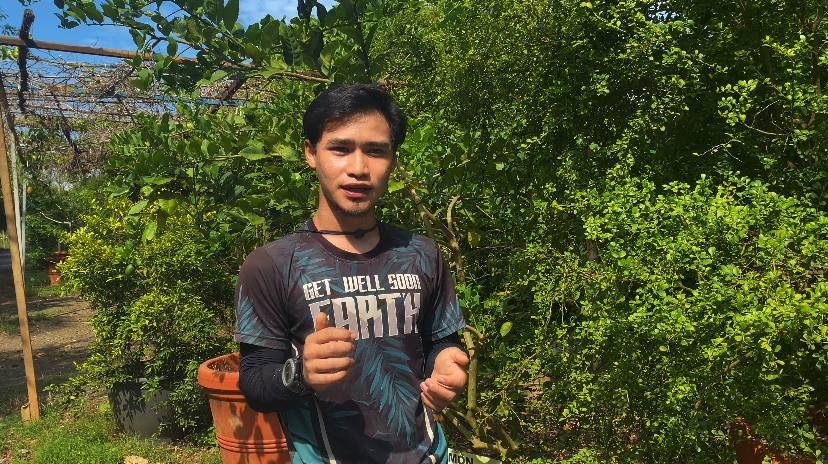

From Johor to Perlis — A Story of Dedication & Growth
Cheku Asjad bin Cheku Sabri was born and raised in Johor before embarking on an inspiring academic and professional journey that eventually led him to Perlis. At only 28 years old, he has already accumulated valuable experience managing complex farm operations across Malaysia.
His journey in agriculture began from a genuine love for nature and plants. This passion, combined with strong academic discipline, led him to pursue formal education in agricultural science — equipping him with both the theoretical foundation and practical skills needed to excel in his field.
Today, he manages one of the most diverse farms in Malaysia, a farm that cultivates over 100 types of vegetables and more than 200 species of trees, including rare and exotic varieties such as finger lime, rose guava, and figs.
With his deep expertise in agrotechnology, he doesn't just plant; he innovates. His approach ensures that even the most sensitive exotic species thrive in the local climate, bridging the gap between traditional farming and modern botanical science.
Now based in Perlis, Cheku Asjad continues to lead by example, proving that youth and passion are the primary drivers for the future of Malaysia's sustainable agriculture and food security.

Upon completing his degree, Cheku Asjad bin Cheku Sabri gained valuable early career experience by working at a vegetable farm in Kuala Lumpur, where he sharpened his skills in commercial crop production, farm logistics, and supply chain management.
This experience in one of Malaysia's most fast-paced urban farming environments taught him the importance of efficiency, consistency, and market-driven agricultural practices. Seeking new challenges and opportunities to grow, he made the bold decision to relocate to Perlis, where he joined a thriving agro-tourism farm.
Within just one year of joining, he has already established himself as an indispensable figure in the farm's operations, managing everything from A to Z — from seed planting and transplanting, to tree care, harvesting, product processing, and direct customer engagement.
"You must be resilient and hardworking. It is not just about physical strength — you must also think critically, embrace technology, and continuously learn about plants and their natural habitats."
— Cheku Asjad bin Cheku Sabri